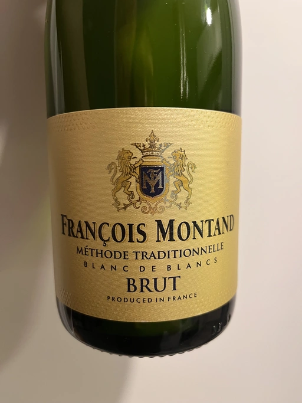

- Type
- White Sparkling, Brut
- Producer
- Francois Montand
- Vintage
- NV
- Location
- France, Vin de Table
- Grapes
- Chardonnay
- Alcohol
- 11
- Sugar
- 10
- Price
- 299 UAH, 232 UAH
- Cellar
- N/A
Producer
Descendant of wine makers, Francois Montand was raised in Champagne. But during WWII he moved to Jura, where he settled and started to produce sparkling wines in traditional method, but with no classification.
Ratings
2022-12-16 - 7.00
I just realised that I consumed way too many bottles of this wine and haven’t rated it yet. Yeasty notes of bread (not bred, mind you), lemon and some yellow apples. Not complex, easy to consume, relatively fresh, yet damaged by higher sugar level. IMO their rosé wine is slightly better.
Related